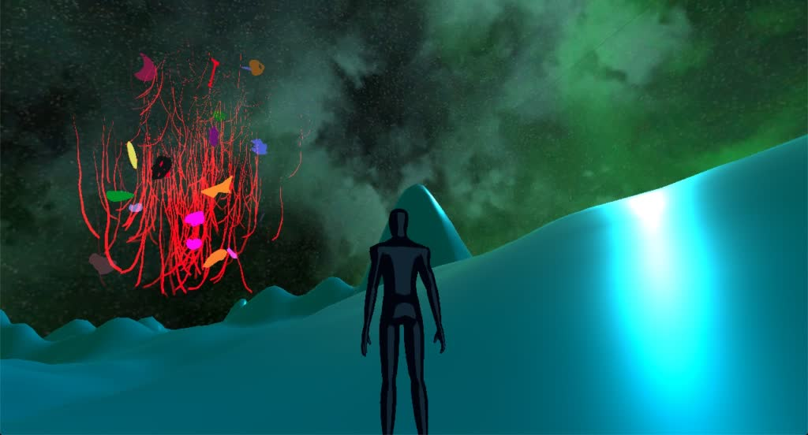
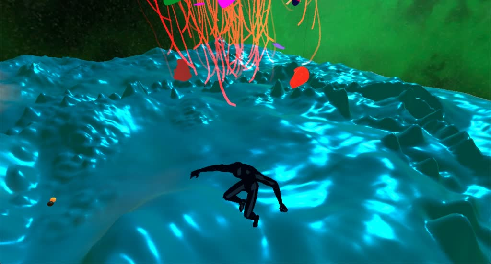
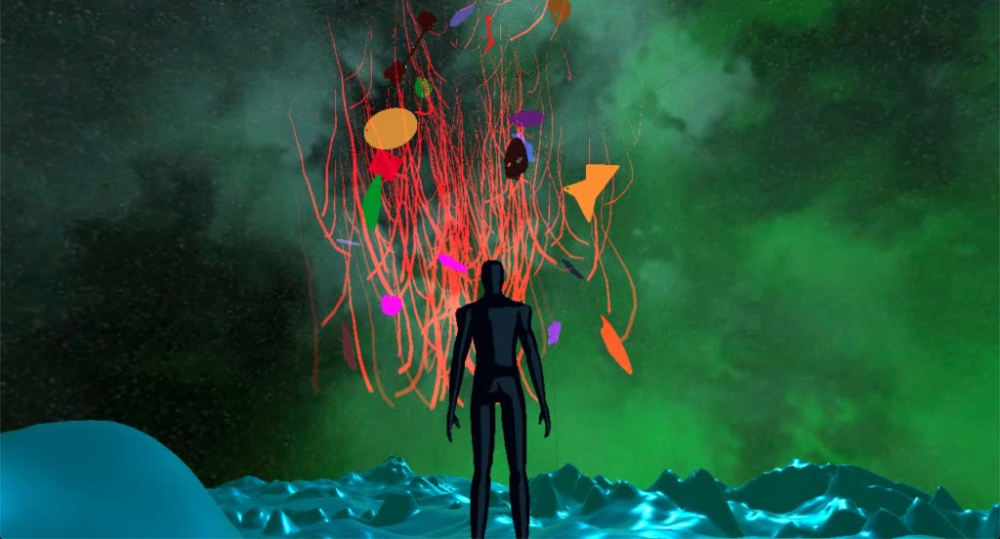
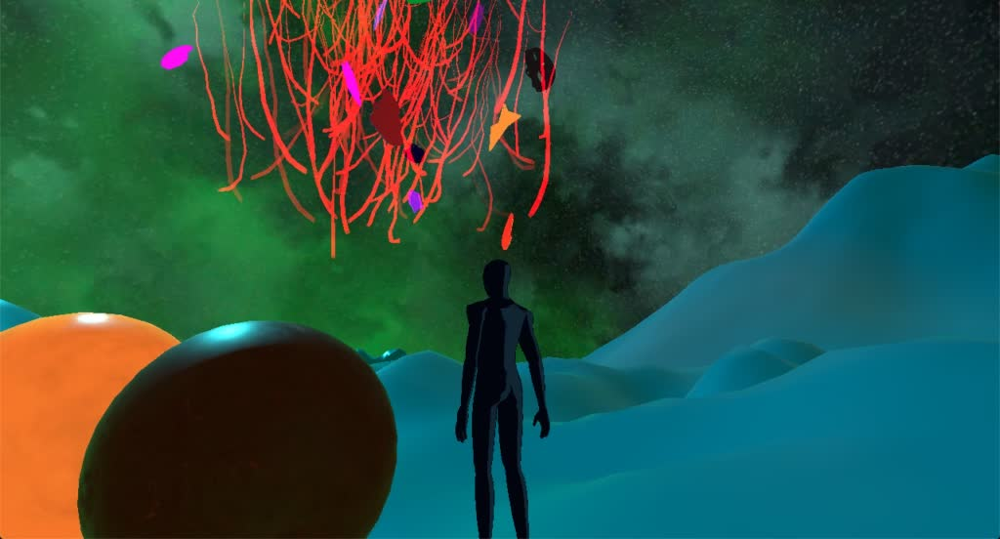
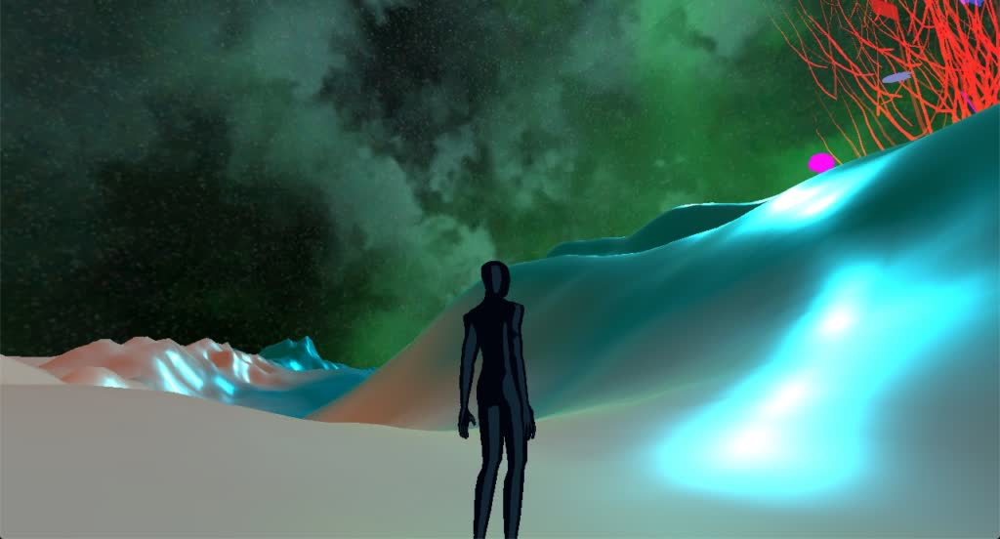

eV-2020
- Date
- November 2020
- Venue
- 2020 Crea Idartes Diversity Festival and 2020 Crea Art Salon
- Role
- Virtual environment creation: interactive sound experience in virtual reality
- Technologies
- Unity, C#, Blender; collision detection and spatial audio
- Credits
- Luis Eduardo Gómez: audio recordings and floating 3D objects. Juliana Ortigoza and Pablo Guchuvo: audio recordings.
- Links

eV-2020 is a virtual sound environment for interacting with audio material produced by students from Bogotá public schools within Idartes' Crea program. It was presented at the 2020 Crea Idartes Diversity Festival and the 2020 Crea Art Salon. Approach the floating 3D objects and chase the spheres to hear the sounds.



